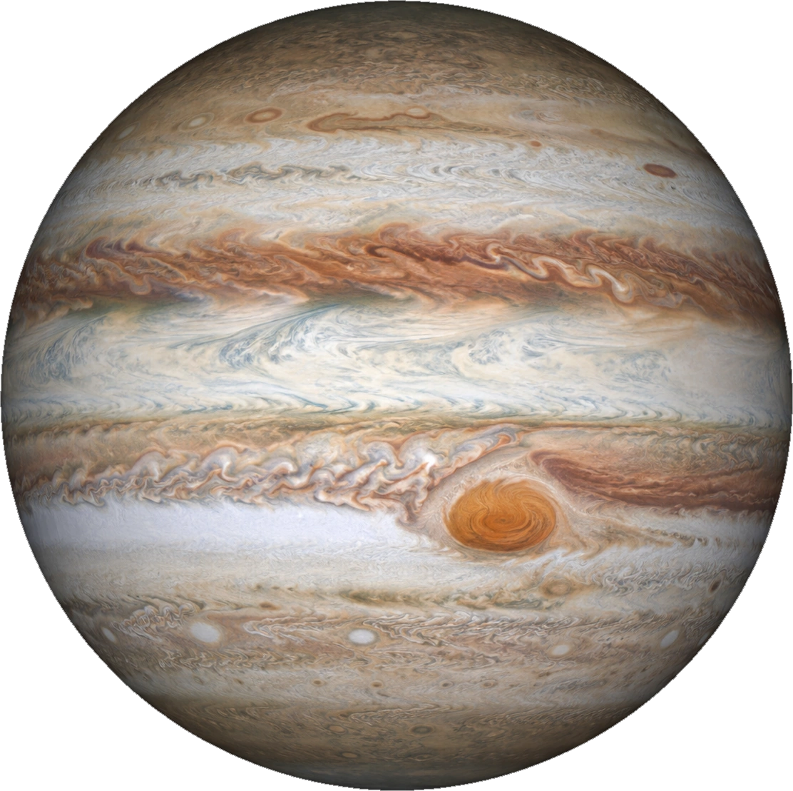
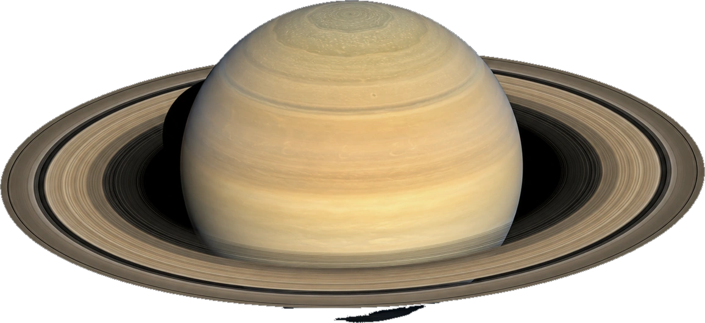
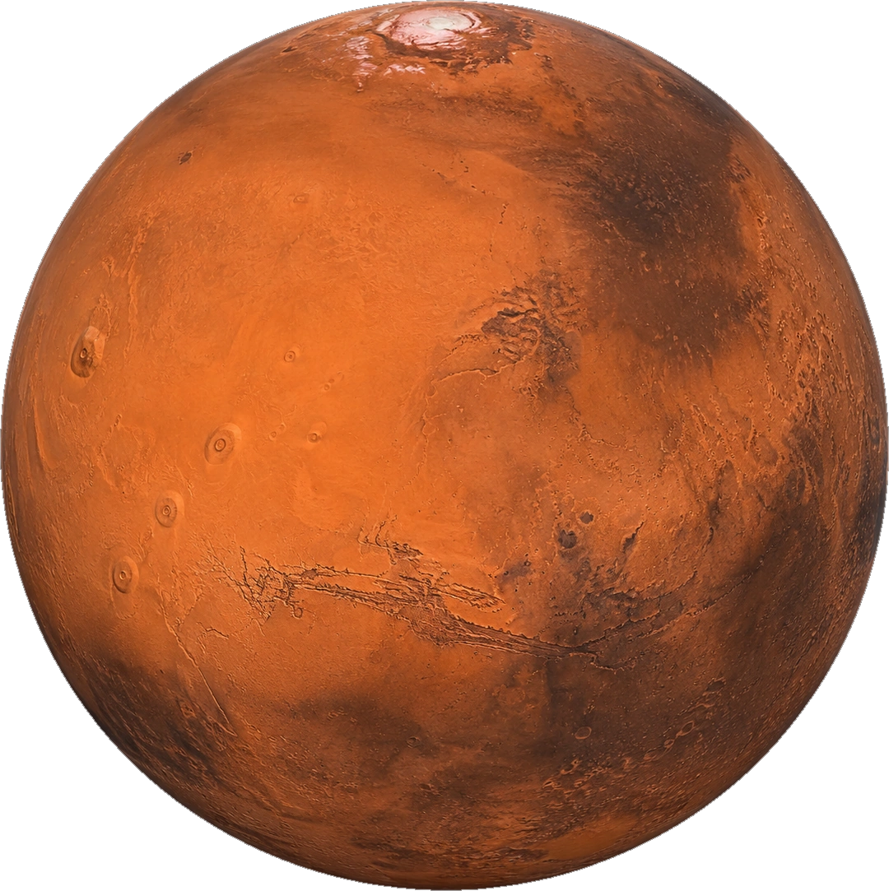
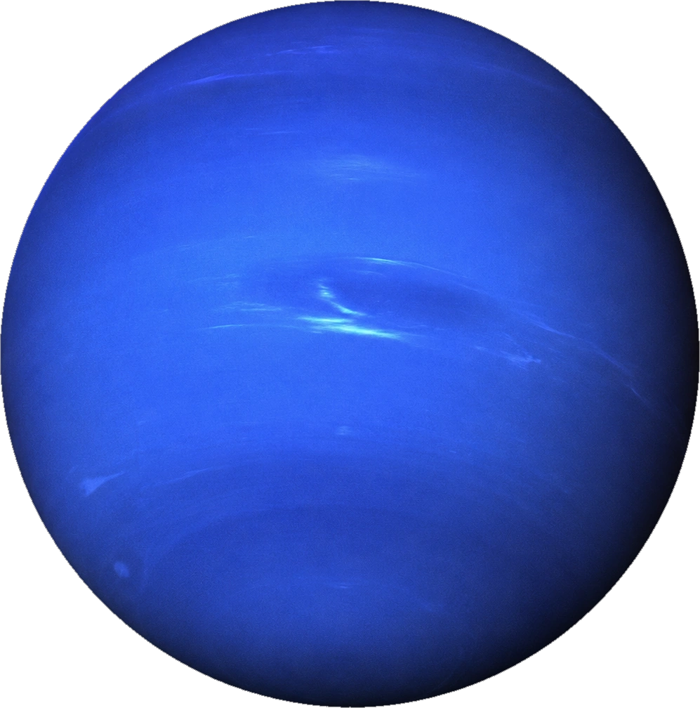

Emission Nebula
The Violet Reach
Ionized hydrogen glows as newborn stars flood the cloud with ultraviolet radiation — painting it in purples and teals visible across thousands of light-years.
✦ 13.8 billion years in the making
From stellar nurseries where suns ignite, to ice giants adrift in eternal night — explore the cosmos as you've never seen it before.
01 — Stellar Nurseries
Nebulae are vast clouds of gas and dust, light-years across. Gravity slowly pulls their matter together until — under crushing pressure — new stars ignite.
Ionized hydrogen glows as newborn stars flood the cloud with ultraviolet radiation — painting it in purples and teals visible across thousands of light-years.
Turquoise oxygen and burning orange sulfur swirl together here. Inside these folds, hundreds of protostars are collapsing toward ignition right now.
When a massive star dies, it seeds space with the elements of life. The calcium in your bones and the iron in your blood were forged in explosions like this.
02 — The Solar System

05 · Gas Giant
The king of planets — so massive that every other planet in the solar system could fit inside it twice over. Its Great Red Spot is a storm wider than Earth that has raged for at least 350 years.

06 · Gas Giant
The jewel of the solar system. Its rings span 282,000 km yet are, in places, only ten meters thick — countless shards of ice and rock in a razor-thin dance. Saturn is so light it would float in water.

04 · Terrestrial
The next world humans will walk on. Home to Olympus Mons — a volcano three times the height of Everest — and Valles Marineris, a canyon that would stretch from New York to Los Angeles.

08 · Ice Giant
The farthest planet from the Sun, discovered with mathematics before it was ever seen through a telescope. Its winds reach 2,100 km/h — the fastest in the solar system — screaming through air of hydrogen, helium and methane.
keep scrolling — the journey continues ↓
03 — Our Closest Neighbor
Born 4.5 billion years ago when a Mars-sized world collided with the young Earth, the Moon steadies our planet's tilt, drives the tides, and gave every civilization in history its first calendar.
04 — Interactive
This is Earth — rendered live in 3D, right in your browser. Drag to spin it. Every human who has ever lived, lived here.
drag to rotate
05 — Final Descent
Contact light. Engine stop. Humanity's next home — one landing at a time.
06 — The Human Chapter
Six hundred people have crossed the boundary of space. Footprints wait on the Moon, robots roam Mars, and a probe launched in 1977 is still whispering back to us from interstellar space. The next chapter is being written now — and it includes you.
Look Up Again